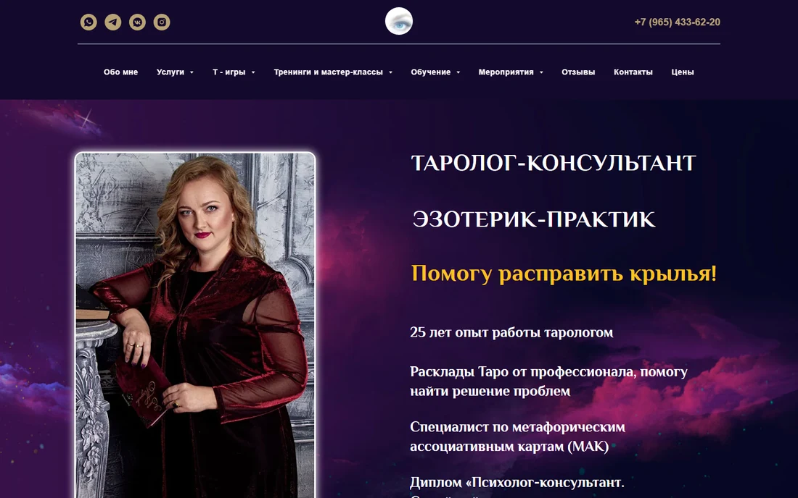
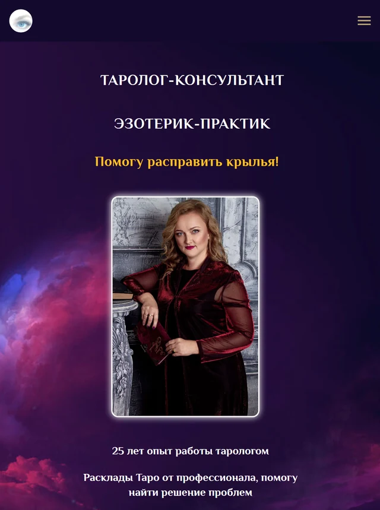
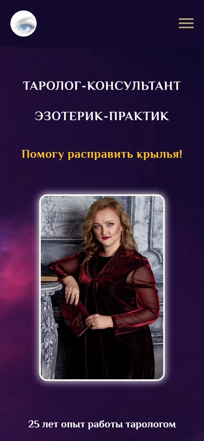

Проект · многостраничный сайт эксперта на TildaLIVE
Сайт таролога, 40+ страниц
- Задача
- Упаковать большой объём экспертного контента (услуги, дипломы, методики, тренинги и мастер-классы) в понятный сайт: из бесконечной ленты соцсетей — в структуру, где нужное находится быстро.
- Исходные данные
- Меню и часть материалов (тексты, картинки) передала заказчица. Остальное я собрала сама из её соцсетей.
- Моя работа
- Каждая из 40+ страниц — отдельный лендинг, и дизайн каждой мой: композиция, ритм, баланс текста и картинок. Сборка в Tilda, мобильная версия, SEO, запуск.
- Результат
- Информация эксперта структурирована: на вопрос клиента заказчица просто отправляет ссылку на нужную страницу. По словам заказчицы, с сайта стали приходить новые клиенты.